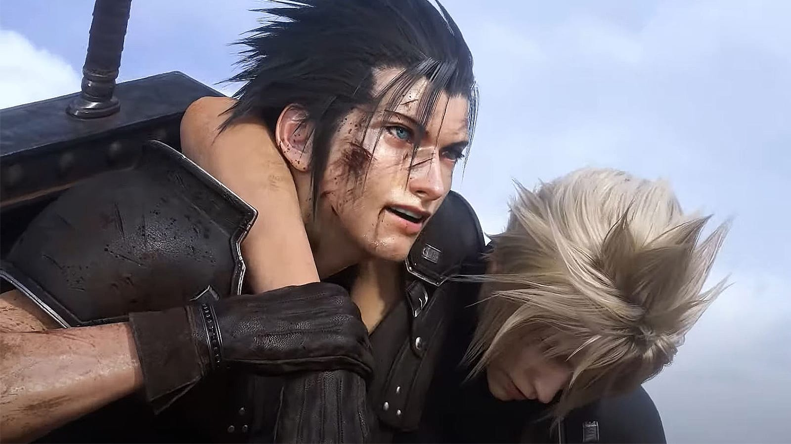

Final Fantasy 7 Rebirth is the second part of the three-part "Final Fantasy 7 remake project", whose goal is to remake the 1997 RPG Final Fantasy 7. The game follows Final Fantasy 7 Remake and is the second of three parts, set to be released winter 2023 for the PlayStation 5.

The title was announced in 2022 during a small presentation celebrating the 25th anniversary of the original Final Fantasy 7, alongside the reveal of Crisis Core -Final Fantasy 7- Reunion, the release of Final Fantasy 7 Remake on Steam and details relating to Final Fantasy 7 Ever Crisis and Final Fantasy 7 The First Soldier.